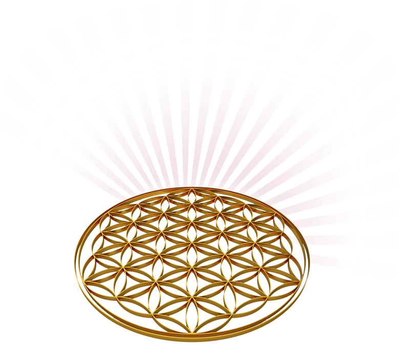

Das heilige Mantra der höchsten Schwingung
Kodoish Kodoish Kodoish Adonai Tsebayoth — „Heilig, heilig, heilig ist der Herr der Heerscharen" — ist ein uraltes, heiliges Mantra, das die höchste göttliche Schwingung in sich trägt. Es verbindet uns mit der kosmischen Ordnung, der Urmatrix und der reinen Regenbogenschwingung des All-Einen.
Dieses kraftvolle Mantra öffnet unser Herz, bringt Licht und Harmonie in unser Leben und stärkt unsere Verbindung zur Quelle. Es wird Erzengel Metatron und Enoch zugeordnet und wirkt gleichzeitig als machtvoller Schutz, da es die höchste Frequenz in uns aktiviert.
Ich selbst arbeite täglich mit dem Kodoish, sei es zur Harmonisierung von Wasser, für Schutz oder zur energetischen Reinigung. In der Heilstrahlausbildung der Regenbogenenergie der Neuen Zeit wird diese hohe Schwingung in unseren Händen, dem Herzen und dem dritten Auge tief verankert.
So können wir uns jederzeit bewusst mit dieser heiligen Schwingung verbinden, uns von ihr tragen lassen und immer wieder wahre Wunder erleben. Eine Einladung, das Göttliche in uns täglich neu zu entdecken.
Das Kodoish-Mantra ist ein uralter Lichtcode, der uns tief mit unserem wahren Wesen verbindet. Es wirkt frei von Bewertungen, jenseits des Verstandes, und hilft uns, uns an unsere göttliche Essenz zu erinnern.
Durch seine kraftvolle Schwingung wird unser physischer Körper neu ausgerichtet, unsere Atome beginnen in einer höheren Frequenz zu schwingen. Gleichzeitig stärkt es unseren Lichtkörper und verbindet uns mit den heiligen Regenbogenstrahlen der Neuen Zeit.
Im hebräischen Kontext findet sich das Kodoish in der Kedusha, dem heiligen Gebet, und symbolisiert die Heiligung der göttlichen Ordnung. Auch die Blume des Lebens spiegelt diese kosmische Harmonie wider und erinnert uns daran, dass wir Teil eines großen, vollkommenen Ganzen sind.
Indem wir uns mit dem Kodoish umhüllen, werden wir selbst zum Ausdruck reiner Liebe. Wir ziehen diese Liebe an, sind geschützt und dürfen immer mehr in unser göttliches Sein hineinwachsen. Das Mantra ist wie eine zarte, leuchtende Brücke zu unserer wahren Heimat.
Erzengel Metatron beschreibt das Kodoish als höchsten Gruß des Lichtes, als reine Frequenz der Einheit und Liebe. Dieses heilige Mantra kann leise gedacht, liebevoll gesprochen oder kraftvoll gesungen werden — ganz so, wie es sich für dich in diesem Moment stimmig anfühlt.
Ich selbst nutze es täglich mit großer Freude, sei es für Schutz, energetische Reinigung, Stabilisierung oder die Harmonisierung von Wasser. In meinen Kursen lehre ich, wie sich das Kodoish mit den Regenbogenheilstrahlen verbindet und dabei tief in Händen, Chakren, dem Herzen und dem dritten Auge wirkt.
Beim Sprechen oder Singen entsteht ein heiliger Dreiklang: Gedanke – Wort – Tat. Diese Einheit stärkt unsere Schöpferkraft und hilft uns, unser Licht bewusst in die Welt zu tragen.
Ob du die zweisilbige oder die dreisilbige Variante wählst, spielt keine Rolle — folge deiner Intuition und deinem Herzen. Lass dich berühren von dieser höchsten Schwingung und erlebe, wie du immer mehr dein wahres, göttliches Selbst lebst. In Licht, in Liebe, in purer Einheit.
Kodoish Mantra anhörenKostenlose Inspirationen für mehr Freude und Leichtigkeit
Kleine Rituale, große Wirkung: Wie du durch einfache tägliche Schritte mehr Selbstannahme entwickelst.
FolgenWas genau ist Channeling? Und wie fühlt sich das an? Ein Einblick in meine persönliche Praxis.
GuckenWie du deine Verbindung zu Engeln stärkst – auch wenn es mal stressig wird im Alltag.
LesenKleine Rituale, große Wirkung: Wie du durch einfache tägliche Schritte mehr Selbstannahme entwickelst.
AnmeldenKleine Rituale, große Wirkung: Wie du durch einfache tägliche Schritte mehr Selbstannahme entwickelst.
WeiterlesenKleine Rituale, große Wirkung: Wie du durch einfache tägliche Schritte mehr Selbstannahme entwickelst.
Lesen